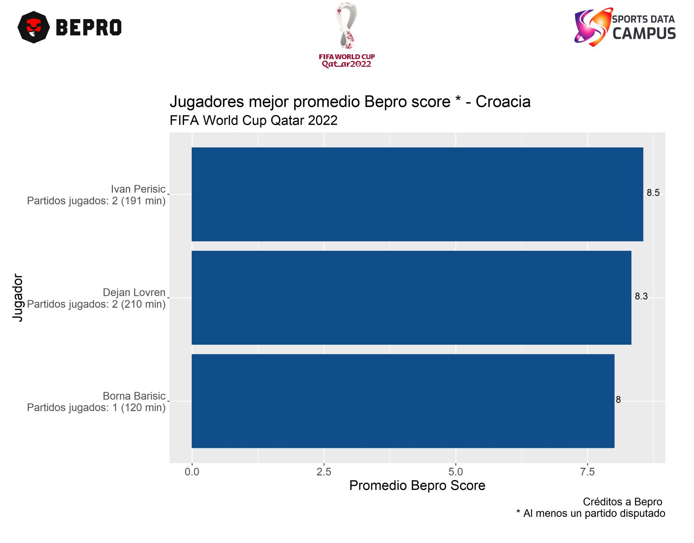
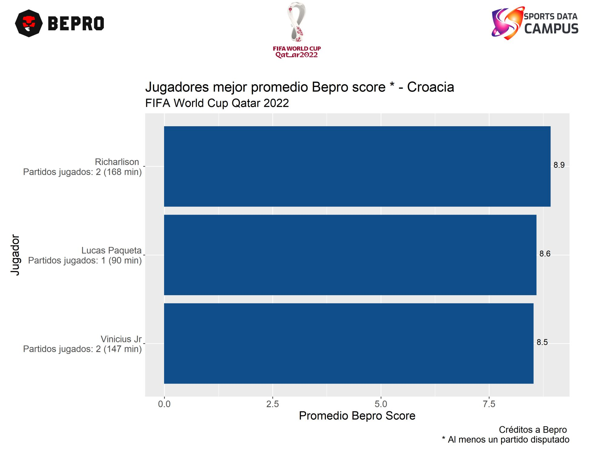
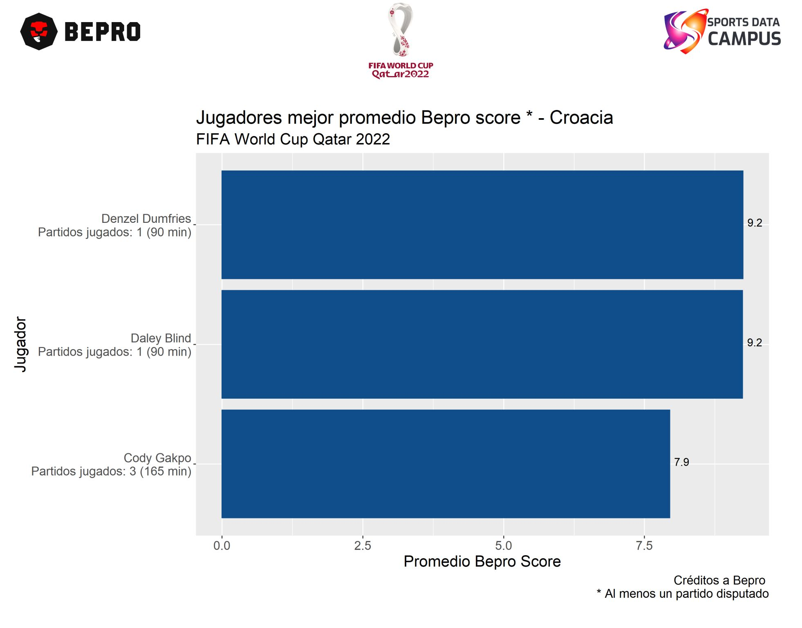
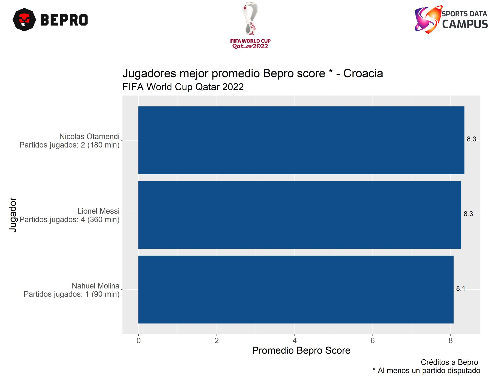

Ya con los cuartos de final de la Copa del mundo Qatar 2022 a la vuelta de la esquina es importante conocer a aquellos jugadores clave de cada equipo y los cuales han tenido un buen rendimiento.
Gracias a la colaboración de Sports Data Campus y BEPRO fue posible contar con la información de todos los partidos de Octavos de final del mundial Qatar 2022 ⚽.
El score que proporciona Bepro es útil para hacer esta comparación, a continuación se presentan los jugadores con el promedio más alto de este score por cada equipo para los encuentros,
📌 Croacia vs Brazil
💡 En Croacia se tiene a Ivan Perisic, Dejan Lovren y Borna Barisic.
💡 En Brasil se tiene a Richarlison, Lucas Paqueta y Vinicius Jr.
📌 Países Bajos vs Argentina
💡En Países Bajos se tiene a Denzel Dumfries, Daley Blind y Cody Gakpo.
💡En Argentina se tiene a Nicolas Otamendi, Lionel Messi y Nahuel Molina.